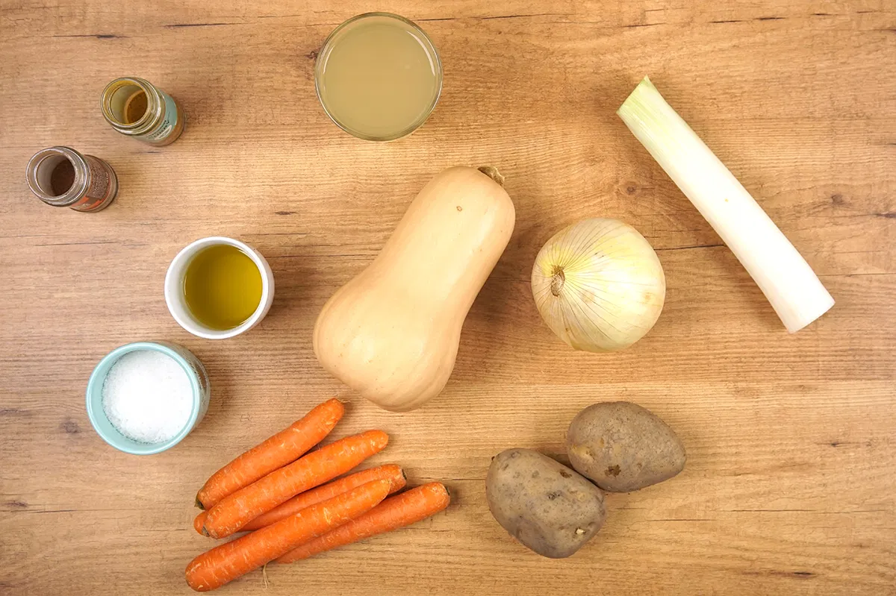
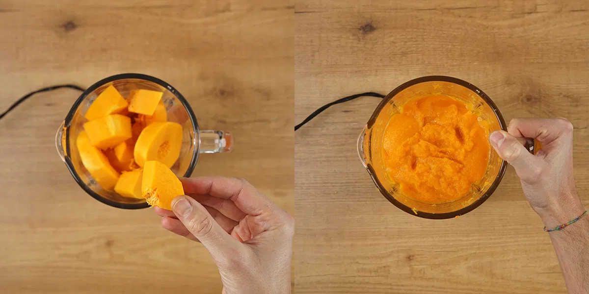

Primer paso
Segundo paso
Tercer paso
- Imagenes de la Preparación 
Pelamos el puerro y troceamos en dos porque sólo vamos a emplear la parte blanca, si es demasiado pequeño o delgado, emplearemos dos. Lo echamos a una cazuela grande, con dos cucharadas de aceite de oliva virgen extra, ya veréis que no hace falta mucho aceite para que se poche.
Del mismo modo pelamos la cebolla y cortamos en dados grandes. La añadimos directamente a la cazuela con el puerro. Removemos y pochamos a fuego lento durante 5 minutos, hasta que se quede más o menos translúcida o transparente.
Mientras tanto lavamos y pelamos la calabaza, las zanahorias y las patatas. Cortamos las patatas en trozos pequeños y las añadimos a la misma cazuela con el puerro y la cebolla, espolvoreamos con sal fina.
.webp)
Primer paso
Segundo paso
Tercer paso
Cuarto paso
- Imagenes de la Preparación 
Las zanahorias las podemos cortar en trocitos muy pequeños o directamente desmenuzar en la picadora de la batidora. Cuanto más pequeños sean los trozos, más rápido se va a hacer.
Cortamos en rodajas la calabaza y nos quedamos con dos de ellas en reserva para luego preparar una pequeña guarnición que acompaña la crema. El resto de las rodajas las picamos muy bien o pasamos por la picadora de la batidora de la misma manera que las zanahorias.
Echamos todo a la cazuela y removemos bien, rehogando durante 15 minutos a fuego medio. Añadimos un litro de agua (si queréis darle más sabor podéis emplear un caldito de verduras o ave) y dejamos cocer hasta que esté todo blando, unos veinte minutos a fuego medio-alto es suficiente.
Probamos de sal y si hace falta añadimos. Trituramos con la batidora hasta conseguir una textura cremosa. Debe quedar una crema ligeramente espesa. Ya tenemos lista la crema para servir bien caliente.
Primer paso
- Imagenes de la Presentación
Mientras reposa preparamos la guarnición. Sólo tenemos que cortar la calabaza que tenemos reservada en Brunoise (una forma de cortar las verduras en pequeños dados de 1 a 2 mm de lado) sobre una tabla de cortar. Echamos todos los dados en un bol y añadimos un poquito de sal final. Ponemos una sartén a fuego medio con un buen chorrito de aceite de oliva virgen extra.
Segundo paso
Echamos los pedazos de calabaza, vamos a pasarla durante 10 minutos hasta que obtengan un color dorado, naranja oscuro. Elegimos un bonito plato hondo, añadimos una cucharada generosa de crema bien caliente. Colocamos en el medio parte de los trocitos de calabaza pochadita y espolvoreamos con una pizca de sal maldon.
.webp)